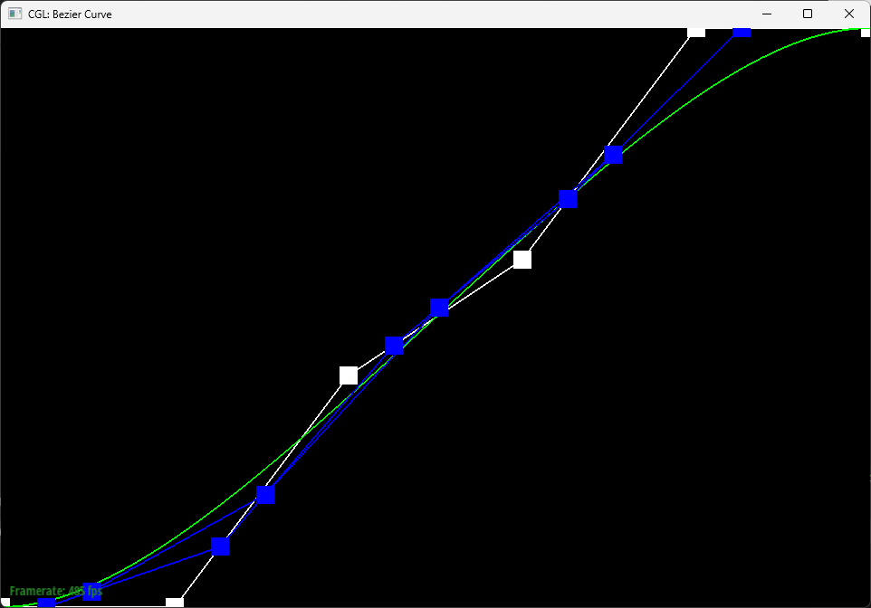

Link to webpage: (TODO) cs184.eecs.berkeley.edu/sp25
Link to GitHub repository: github.com/cal-cs184-student/sp25-hw2-team-of-1
In this homework, I've built the method to evaluate Bezier Curves and Surfaces at a given t using De Casteljau's algorithm and built the system to flip/split edges and do a loop subdivision.
De Casteljau's algorithm is the algorithm that runs linear interpolation (lerp) multiple times based on the amount of control points. For each step, I create a new std::vector<Vector2D>, iterate through the points, do linear interpolation, and push the new point into the new vector. The resulting vector has one less element than input points.
Here's the Bezier curve with 6 control points.
Here's each step of evaluation
| Step 1 | Step 2 | Step 3 |
|---|---|---|
|
 | |
| Step 4 | Step 5 | Step 6 |
|---|---|---|
 |
Here's a slightly different curve with different parameter t.
| t < 0.5 | t ≈ 0.5 | t > 0.5 |
|---|---|---|
 |
 |
De Casteljau's algorithm extends to Bezier surfaces by evaluating the curve on one axis with one parameter, then, treat the evaluated points on that first axis as a Bezier curve, and evalulate points with another parameter.
Vector3D evaluate(double u, double v)
{
// std::vector<std::vector<Vector3D>> controlPoints
auto pts = std::vector<Vector3D>();
// Evaluate on one direction with parameter u
for (int i = 0; i < controlPoints.size(); i++) {
pts.push_back(evaluate1D(controlPoints[i], u));
}
// Then evalulate the collected points on another axis with parameter v
return evaluate1D(pts, v);
}
Here's the evaluated bez/teapot.bez.
To implement area-weighted vertex normals, I iterated through all faces, add them times the relative area to the sum, and then call .unit() on it to get a unit vector.
To iterate over the faces over the vertex, I get the initial iter = start = halfedge() I used iter->face() to get the current face and iter->twin()->next() to move to the next face. Iterate this using a do-while loop while iter != start.
To compute the relative area, gather two vectors representing two of the sides, compute the cross product, and gets its magnitude. This represents double the actual area.
auto v1 = he->next()->vertex()->position - he->vertex()->position;
auto v2 = he->next()->next()->vertex()->position - he->next()->vertex()->position;
auto prod = cross(v1, v2);
auto relativearea = sqrt(prod.x * prod.x + prod.y * prod.y + prod.z * prod.z);
| Flat shading | Phong shading |
|---|---|
 |
 |
I have implemented this by referencing the image given in the homework.
I gathered all the halfedges in this structure. The function takes in the edge CB. First, gets its halfedge, and this halfedge is called bc. Then, iterate through all halfedges nexts and twins and gets all the relevant halfedges, edges, vertexes, faces.
VertexIter a, b, c, d; HalfedgeIter ab, bd, dc, ca;
HalfedgeIter _cb, _bc = e0->halfedge();
FaceIter _abc, _bcd;
EdgeIter ab_ba, bd_db, dc_cd, ca_ac;
// Starting with _bc, pattern match with the image on the homework website and assign these
// b, ca, c, ab, a , _cb, c, bd, dc, d, _abc, _bcd, ab_ba, bd_db, dc_cd, ca_ac
Then, since the edges will be flipped, the old edge can actually be reused such that no elements will be created or destroyed.
// Reuse old `bc` and `cb` halfedges as `ad` and `da` edges.
HalfedgeIter ad = _bc, da = _cb;
// and its associated
EdgeIter ad_da = e0;
Then, referencing the diagram again, I set the associated vertexes, halfedges, edges, and faces to match the new target shape.
set(a, ab, ab_ba, abd, ab->twin(), bd);
set(b, bd, bd_db, abd, bd->twin(), da);
set(d, da, ad_da, abd, ad, ab);
set(a, ad, ad_da, acd, da, dc);
set(d, dc, dc_cd, acd, dc->twin(), ca);
set(c, ca, ca_ac, acd, ca->twin(), ad);
where set is a helper function
static void set(VertexIter src, HalfedgeIter he, EdgeIter e, FaceIter f, HalfedgeIter twin, HalfedgeIter next) {
src->halfedge() = he;
e->halfedge() = he;
f->halfedge() = he;
twin->twin() = he;
he->setNeighbors(next, twin, src, e, f);
}
| Before edge flips | After edge flips |
|---|---|
 |
Debugging Journey: I had the correct implementation before I come up with the simplified set helper function, where I set everything one by one. However, Part 6 implementation makes me question whether I implemented Edge flip correctly, so I changed it. Turns out it's the Edge split part that was incorrect, but at this point I went with the simplified set helper instead of questionable code that goes back and forth.
I have implemented this by referencing the image given in the homework.

I gathered all the halfedges in this structure. The function takes in the edge CB. First, gets its halfedge, and this halfedge is called bc. Then, iterate through all halfedges nexts and twins and gets all the relevant halfedges, edges, vertexes, faces.
VertexIter a, b, c, d; HalfedgeIter ab, bd, dc, ca;
HalfedgeIter _cb, _bc = e0->halfedge();
FaceIter _abc, _bcd;
EdgeIter ab_ba, bd_db, dc_cd, ca_ac;
// Starting with _bc, pattern match with the image on the homework website and assign these
// b, ca, c, ab, a , _cb, c, bd, dc, d, _abc, _bcd, ab_ba, bd_db, dc_cd, ca_ac
Then, I recycled some of the halfedges, edges, faces, but I have to create some more since splitting creates more faces, edges, halfedges, and vertex.
// Shrink `cb` and `bc` to `cm` and `mc`.
HalfedgeIter cm = _cb, mc = _bc;
cm_mc = _cb->edge();
// Recycle `abc` and `bcd` for two of the faces.
FaceIter cam = _abc, dcm = _bcd;
// Creates new for the rest
// HalfedgeIter am, ma, bm, mb, dm, md
// EdgeIter bm_mb, am_ma, dm_md
// FaceIter abm, bdm
Then, referencing the diagram again, I set the associated vertexes, halfedges, edges, and faces to match the new target shape.
set(a, ab, ab->edge(), abm, ab->twin(), bm);
set(b, bm, bm_mb , abm, mb , ma);
set(m, ma, am_ma , abm, am , ab);
set(b, bd, bd->edge(), bdm, bd->twin(), dm);
set(d, dm, dm_md , bdm, md , mb);
set(m, mb, bm_mb , bdm, bm , bd);
set(d, dc, dc->edge(), dcm, dc->twin(), cm);
set(c, cm, cm_mc , dcm, mc , md);
set(m, md, dm_md , dcm, dm , dc);
set(c, ca, ca->edge(), cam, ca->twin(), am);
set(a, am, am_ma , cam, ma , mc);
set(m, mc, cm_mc , cam, cm , ca);
where set is the same helper function as last part.
static void set(VertexIter src, HalfedgeIter he, EdgeIter e, FaceIter f, HalfedgeIter twin, HalfedgeIter next) {
src->halfedge() = he;
e->halfedge() = he;
f->halfedge() = he;
twin->twin() = he;
he->setNeighbors(next, twin, src, e, f);
}
| Before edge splits | After edge splits |
|---|---|
|
 |
| Before edge splits and flips | After edgeedge splits and flips |
|---|---|
|
Debugging Journey: At first, I was not using set helper function and was setting edges, faces, halfedges next() and twin() directly. While working on part 6, it proves that while it seems to work on a small scale, it creates holes when done in a bigger scale. At that time, I spend time to create this set helper, which makes it very hard miss setting some attributes.
To implement loop subdivision, I first loop over all vertices, resetting isNew flag to false, and calculate their new position and stored in newPosition. This calculation loops over all neighbors, take note of the degree of the vertex and the sum of positions, and use the provided formula in the homework website.
Then, I loop over all edges, resetting isNew flag to false, and calculate their new midpoint position and stored in newPosition. This calculation uses similar pattern matching style implemented in Part 4 and Part 5 to figure out all vertices.
HalfEdgeIter ab = center->halfedge();
// starting from HalfEdgeIter ab, get these information via pointer manipulation
// HalfEdgeIter bd, ba, cb
// VertexIter a, b, c, d;
Then, use new position of a, b, c, and d (calculated in the first loop over all vertices), calculate the position using the provided formula in the homework website.
Then, split all the original edges. In the spliting logic, also assign isNew flag for these lines, which will be helpful to determine which edges to flip.
am_ma->isNew = true;
dm_md->isNew = true;
m->isNew = true;
Then, flip the new edges which connects one old vertex and one new vertex (he->vertex()->isNew != he->next()->vertex()->isNew).
Here's the result of applying loop subdivision to icosahedron/input.dae.
| Original | Ater 1 Loop Subdivision | Ater 2 Loop Subdivisions |
|---|---|---|
 |
 |
 |
After each loop subdivision, the sharp corners becomes more rounded and the mesh seems to become smaller. By pre-spliting some edges, it seems like it does not really change the roundness nor changing the rate which the shape becomes smaller, although do change the balance and how edge splits look like.
As shown in the homework website, the result of performing loop subdivision on the original cube is not symmetrical. This is because the way the edges are laid out is not symmetrical. There is a way to preprocess it such that it is symmetrical, by making an X cross on every face like so:
| Original Cube | Preprocessed Cube |
|---|---|
Here is the new cube with symmetrical loop subdivision:
| Preprocessed Cube | Ater 1 Loop Subdivision | Ater 2 Loop Subdivisions |
|---|---|---|
 |
| Ater 3 Loop Subdivisions | Ater 4 Loop Subdivisions | Ater 5 Loop Subdivisions |
|---|---|---|
Preprocessing this way alleviate the effects since the edge lines on the cube is now symmetrical.